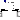

Internal package, should not be used by user
Package with models that are used to construct the models in package Forces. The models in this package should not be directly used by a user.
Extends from Modelica.Icons.InternalPackage (Icon for an internal package (indicating that the package should not be directly utilized by user)).
| Name | Description |
|---|---|
|  BasicForce | Force acting between two frames, defined by 3 input signals |
| BasicTorque | Torque acting between two frames, defined by 3 input signals |
| BasicWorldForce | External force acting at frame_b, defined by 3 input signals |
| BasicWorldTorque | External torque acting at frame_b, defined by 3 input signals |
| ZeroForceAndTorque | Set force and torque to zero |
| standardGravityAcceleration | Standard gravity fields (no/parallel/point field) |
Force acting between two frames, defined by 3 input signals
The 3 signals of the force connector are interpreted as the x-, y- and z-coordinates of a force acting at the frame connector to which frame_b of this component is attached. Via parameter resolveInFrame it is defined, in which frame these coordinates shall be resolved:
| Types.ResolveInFrameAB. | Meaning |
|---|---|
| world | Resolve input force in world frame |
| frame_a | Resolve input force in frame_a |
| frame_b | Resolve input force in frame_b (= default) |
| frame_resolve | Resolve input force in frame_resolve (frame_resolve must be connected) |
If resolveInFrame = ResolveInFrameAB.frame_resolve, the force coordinates are with respect to the frame, that is connected to frame_resolve.
If resolveInFrame is not ResolveInFrameAB.frame_resolve, then the position vector and the orientation object of frame_resolve must be set to constant values from the outside in order that the model remains balanced (these constant values are ignored).
Extends from Modelica.Mechanics.MultiBody.Interfaces.PartialTwoFrames (Base model for components providing two frame connectors + outer world + assert to guarantee that the component is connected).
| Name | Description |
|---|---|
| resolveInFrame | Frame in which force is resolved (1: world, 2: frame_a, 3: frame_b, 4: frame_resolve) |
| Name | Description |
|---|---|
| frame_a | Coordinate system a fixed to the component with one cut-force and cut-torque |
| frame_b | Coordinate system b fixed to the component with one cut-force and cut-torque |
| frame_resolve | The input signals are optionally resolved in this frame |
| force[3] | x-, y-, z-coordinates of force resolved in frame defined by resolveInFrame [N] |
Torque acting between two frames, defined by 3 input signals
The 3 signals of the torque connector are interpreted as the x-, y- and z-coordinates of a torque acting at the frame connector to which frame_b of this component is attached. Via parameter resolveInFrame it is defined, in which frame these coordinates shall be resolved:
| Types.ResolveInFrameAB. | Meaning |
|---|---|
| world | Resolve input torque in world frame |
| frame_a | Resolve input torque in frame_a |
| frame_b | Resolve input torque in frame_b (= default) |
| frame_resolve | Resolve input torque in frame_resolve (frame_resolve must be connected) |
If resolveInFrame = ResolveInFrameAB.frame_resolve, the torque coordinates are with respect to the frame, that is connected to frame_resolve.
If resolveInFrame is not ResolveInFrameAB.frame_resolve, then the position vector and the orientation object of frame_resolve must be set to constant values from the outside in order that the model remains balanced (these constant values are ignored).
Extends from Modelica.Mechanics.MultiBody.Interfaces.PartialTwoFrames (Base model for components providing two frame connectors + outer world + assert to guarantee that the component is connected).
| Name | Description |
|---|---|
| resolveInFrame | Frame in which torque is resolved (1: world, 2: frame_a, 3: frame_b, 4: frame_resolve) |
| Name | Description |
|---|---|
| frame_a | Coordinate system a fixed to the component with one cut-force and cut-torque |
| frame_b | Coordinate system b fixed to the component with one cut-force and cut-torque |
| frame_resolve | The input signals are optionally resolved in this frame |
| torque[3] | x-, y-, z-coordinates of torque resolved in frame defined by resolveInFrame [N.m] |
External force acting at frame_b, defined by 3 input signals
The 3 signals of the force connector are interpreted as the x-, y- and z-coordinates of a force acting at the frame connector to which this component is attached. Via parameter resolveInFrame it is defined, in which frame these coordinates shall be resolved:
| Types.ResolveInFrameB. | Meaning |
|---|---|
| world | Resolve input force in world frame (= default) |
| frame_b | Resolve input force in frame_b |
| frame_resolve | Resolve input force in frame_resolve (frame_resolve must be connected) |
If resolveInFrame = Types.ResolveInFrameB.frame_resolve, the force coordinates are with respect to the frame, that is connected to frame_resolve.
If resolveInFrame is not Types.ResolveInFrameB.frame_resolve, then the position vector and the orientation object of frame_resolve must be set to constant values from the outside in order that the model remains balanced (these constant values are ignored).
Extends from Interfaces.PartialOneFrame_b (Base model for components providing one frame_b connector + outer world + assert to guarantee that the component is connected).
| Name | Description |
|---|---|
| resolveInFrame | Frame in which force is resolved (1: world, 2: frame_b, 3: frame_resolve) |
| Name | Description |
|---|---|
| frame_b | Coordinate system fixed to the component with one cut-force and cut-torque |
| frame_resolve | The input signals are optionally resolved in this frame |
| force[3] | x-, y-, z-coordinates of force resolved in frame defined by resolveInFrame [N] |
External torque acting at frame_b, defined by 3 input signals
The 3 signals of the torque connector are interpreted as the x-, y- and z-coordinates of a torque acting at the frame connector to which this component is attached. Via parameter resolveInFrame it is defined, in which frame these coordinates shall be resolved:
| Types.ResolveInFrameB. | Meaning |
|---|---|
| world | Resolve input torque in world frame (= default) |
| frame_b | Resolve input torque in frame_b |
| frame_resolve | Resolve input torque in frame_resolve (frame_resolve must be connected) |
If resolveInFrame = Types.ResolveInFrameB.frame_resolve, the torque coordinates are with respect to the frame, that is connected to frame_resolve.
If resolveInFrame is not Types.ResolveInFrameB.frame_resolve, then the position vector and the orientation object of frame_resolve must be set to constant values from the outside in order that the model remains balanced (these constant values are ignored).
Extends from Interfaces.PartialOneFrame_b (Base model for components providing one frame_b connector + outer world + assert to guarantee that the component is connected).
| Name | Description |
|---|---|
| resolveInFrame | Frame in which torque is resolved (1: world, 2: frame_b, 3: frame_resolve) |
| Name | Description |
|---|---|
| frame_b | Coordinate system fixed to the component with one cut-force and cut-torque |
| frame_resolve | The input signals are optionally resolved in this frame |
| torque[3] | x-, y-, z-coordinates of torque resolved in frame defined by resolveInFrame [N.m] |
Set force and torque to zero
Set force and torque vectors on frame connector frame_a to zero.
Extends from Modelica.Blocks.Icons.Block (Basic graphical layout of input/output block).
| Name | Description |
|---|---|
| frame_a |
Standard gravity fields (no/parallel/point field)
This function defines the standard gravity fields for the World object.
| gravityType | gravity [m/s2] | description |
| Types.GravityType.NoGravity | = {0,0,0} | No gravity |
| Types.GravityType.UniformGravity | = g | Constant parallel gravity field |
| Types.GravityType.PointGravity | = -(mu/(r*r))*r/|r| | Point gravity field with spherical mass |
Extends from Modelica.Icons.Function (Icon for functions), Modelica.Mechanics.MultiBody.Interfaces.partialGravityAcceleration (Interface for the gravity function used in the World object).
| Name | Description |
|---|---|
| r[3] | Position vector from world frame to actual point, resolved in world frame [m] |
| gravityType | Type of gravity field |
| g[3] | Constant gravity acceleration, resolved in world frame, if gravityType=UniformGravity [m/s2] |
| mu | Field constant of point gravity field, if gravityType=PointGravity [m3/s2] |
| Name | Description |
|---|---|
| gravity[3] | Gravity acceleration at position r, resolved in world frame [m/s2] |